In this lesson we are going to learn how to insert images into a website using two methods.
Method 1 - only using HTML
15. we use an img tag, specifying the folder and filename
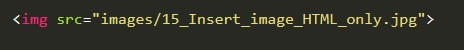16. We add an alt tag to make the image searchable on search engines such as google
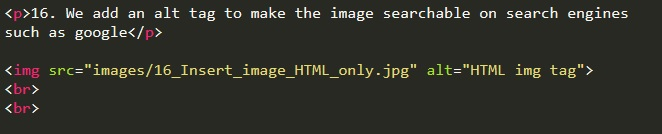Method 2 - Using HTML & CSS
17. with CSS we can modify the characteristics of the image.
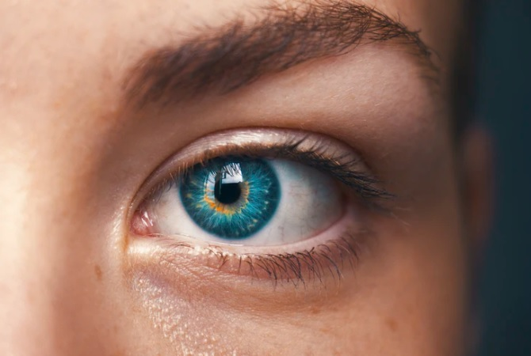18. Note that the image above is huge and takes up too much space.
18a. first we add a class to the image. then define the width in CSS code.Note that we do not need to add a height becuase it scales automatically with the width.
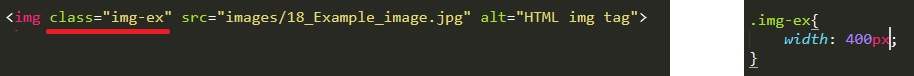19a. To add a background image we use a div class but we do not specify the image source in HTML. we do it in the CSS.
19b. Note that the image is repeated till it fills the specified box of 1200 x 1600px.
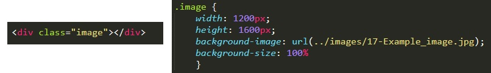20a. Now I have reduced the sixe of the container to 500px x 330px when the image is larger at 670px x 450px
20b. Here by setting the background size to 100% the image should scale within the div container.
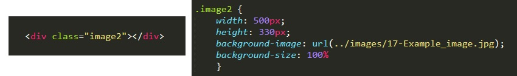21a. With reduced container size of 500px x 330px when the image is larger at 670px x 450px
21b. If we set the image sixe to 50% then it will duplicate the image to fill the container.
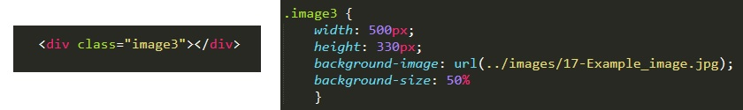22a. With reduced container size of 500px x 330px when the image is larger at 670px x 450px
22b. we set the background-size: contain; to the CSS and the image is always contained in the box.
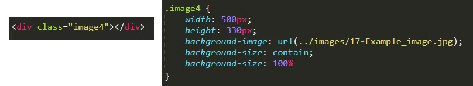23a. With reduced container size of 500px x 165px when the image is larger at 670px x 450px
23b. we set the background-size: cover; to the CSS and the image will always cover the entire size of the box.Note that because the dimensions of this new box are slimmer in height the image is being cropped on the bottom.
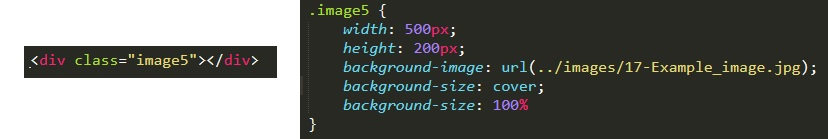24a. With reduced container size of 500px x 165px when the image is larger at 670px x 450px
24b. we set the background-size: cover; to the CSS and the image will always cover the entire size of the box. Now we can add an aditional line of CSS to centre the image vertically, cropping the top and bottom of the image. Instead of centre we could also use left, right, top or bottom to possition the image within the box.
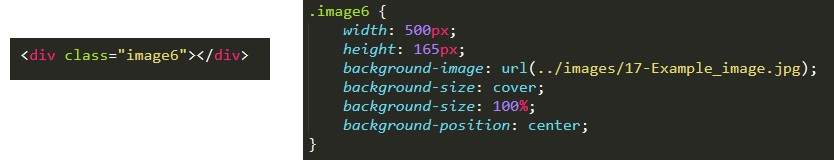25a. With reduced container size of 500px x 330px when the image is larger at 670px x 450px
25b. If we set the image sixe to 50% then it will duplicate the image to fill the container unless we use background-repeat: no-repeat;.
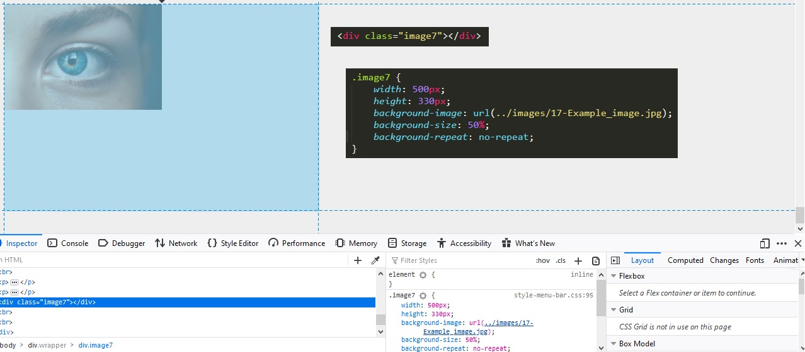26a. With reduced container size of 300px x 165px when the image is larger at 670px x 450px
26b. we set the background-size: cover; to the CSS and the image will always cover the entire size of the box. Now we can add an aditional line of CSS to centre the image vertically, cropping the top and bottom of the image. Instead of centre we could also use left, right, top or bottom to possition the image within the box. we can also add a second perameter to background position such as left. This will align left and centre vertically. Note I have set the image size to 200% to demonstrate this clearly.
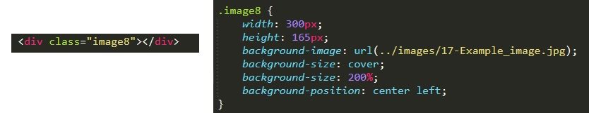27a. With reduced container size of 300px x 165px when the image is larger at 670px x 450px
27b. We can also use CSS to add an action to the image. In this example when I hover over the image I change the image sixe from the 200% to 100%.
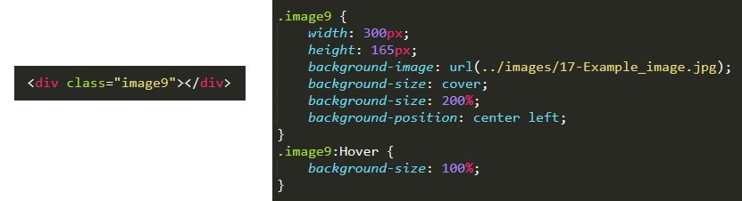